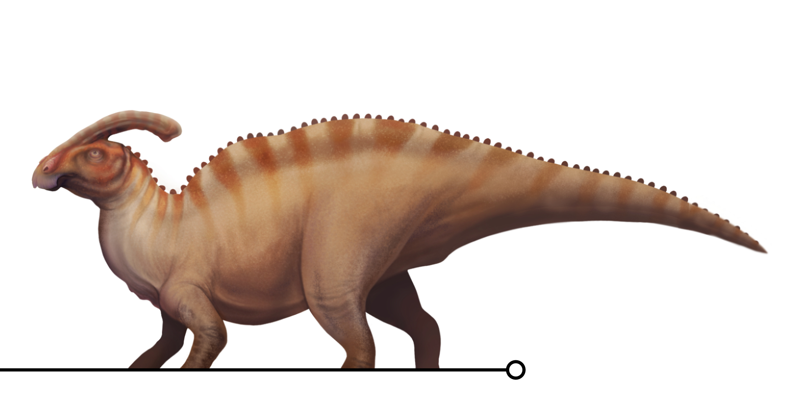
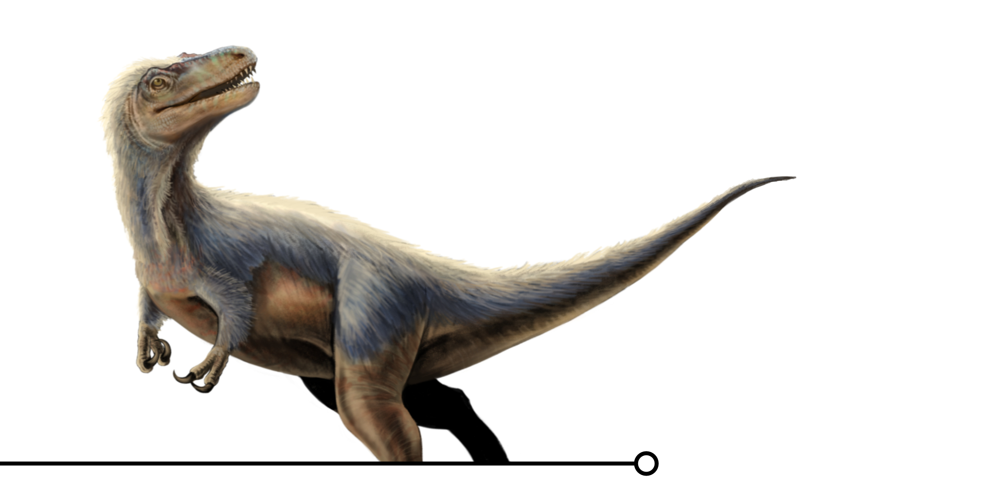
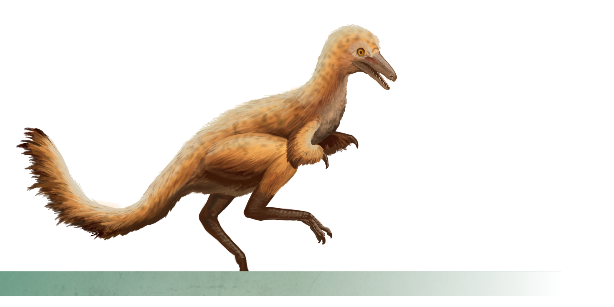
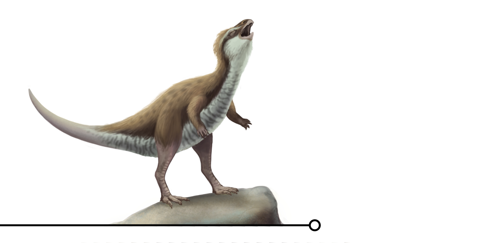

Ancient Acoustics: Sounds from a Lost World

Discover the Sounds from Earth's Distant Past!
Have you ever wondered what sounds the dinosaurs might have made? Could they make roars as depicted in media? Or did they chirp or sing like modern birds?
With recent discoveries, paleontologists can determine what vocalizations dinosaurs and other prehistoric animals likely made in the past. This book focuses on a collection of prehistoric animals and the fossil evidence used to better understand their vocal anatomy. Uncover the lost sounds once used to attract mates, find food, and communicate in groups.
This book includes:
• 11 unique species
• Illustrations depicting extinct animals
• Anatomical diagrams
• A glossary of terms

Species Spotlight:

Parasaurolophus:
This well-known hadrosaur dinosaur had a head crest that had perplexed paleontologists for decades. Some sources claimed their crest was used as a weapon, a means to detect foliage, or even a snorkel! But this dinosaur actually used this crest for display and for vocal communication. It acted as a resonating chamber to allow for their deep voices to span over greater distances.

Timurlengia:
Everyone knows the mighty Tyrannosaurus rex, but few have heard of its smaller, earlier relative: Timurlengia. Fossils of this early tyrannosaur provided paleontologists with a large braincase full of impressions made by nerves. These impressions tell us that this dinosaur likely had a large brain with complex sensory systems, like hearing, and evolved these senses before before growing to the immense sizes we are familiar with today!

Shuvuuia:
Fossils of this small dinosaur was found in the Gobi Desert of Mongolia. CT-scans of the dinosaur's inner ear revealed that the animal might have had hearing comparable to a barn owl!

Pulaosaurus:
In 2025, a new genus of dinosaur was uncovered in China that lived during the Middle Jurassic. This dinosaur had a remarkably preserved larynx, which was almost completely intact. Could the existence of this organ and surrounding soft tissue provide compelling evidence that dinosaurs were capable of making bird-like vocalizations?
Reconstructing Prehistoric Life:

Art Inspired by Science:
Any form of artistic work that attempts to depict prehistoric life according to scientific evidence is considered paleoart. This . Therefore, all the illustrations in the book draw from scientific sources, such as fossil evidence, CT-scans of fossil remains, and
What Comes Next?
The Start of a Series:
If Ancient Acoustics meets its goals, there will be additional books that will dive into other topics related to dinosaurs and prehistoric life. After learning about several species with remarkable vocalisation, there will be subsequent books that will focus on other topics, such as:
Monstrous Backs - Spotlighting Sail-backed Dinosaurs
Creative Crests - Exploring Dinosaurs with Decorated Displays
Prehistoric Pigments - Color Lost in Time
And more!
About the Artist:
Domenic Pennetta is a scientific illustrator who combines his love of art with science. His work aims to promote enthusiasm for science-related topics and natural history, aiming to depict a variety of invertebrates and other animals, living or extinct. This book represents his first ‘foray’ into the wonderful world of paleoart.